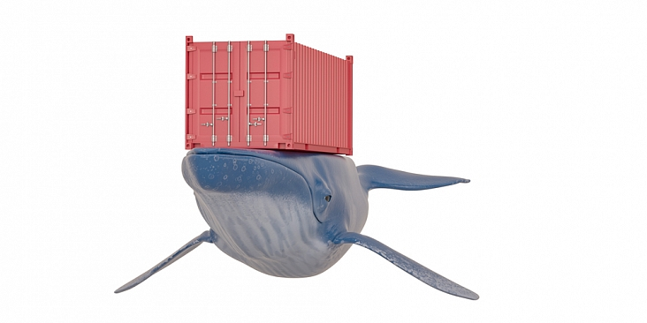

Пять трендов в сфере хранения данных, на которые следует обратить внимание в 2021 году
«Данные правят миром. Как ожидается, рост суммарного количества создаваемых данных будет экспоненциально ускоряться и к 2025 году их объем достигнет 175 зеттабайт. Сегодня мы создаем больше данных за час, чем 20 лет назад создавали за целый год. И, когда объемы измеряются зеттабайтами, нам требуется простой, безопасный и недорогой способ сбора, хранения и применения этих данных», — говорит Дейв Мосли (Dave Mosley), генеральный директор Seagate Technology.
В эпоху цифровой трансформации количество цифровых данных в мире измеряется миллиардами терабайт.
Форсированный переход в онлайн на фоне пандемии еще больше подхлестнул их беспрецедентный рост, и
это уже дает свои плоды в виде усложнения и повышения разнообразия экосистемы данных, которая
сегодня включает в себя многооблачные и периферийные среды.
Применение IoT, AI,
смарт-технологий набирает обороты, соответственно растет и потребность в вычислительных ресурсах. Предпринимателям приходится признать, что управлять данными стало гораздо сложнее.
Эксперты Seagate проанализировали глобальный рынок данных, выделив пять ключевых тенденций, которые ярко проявят себя в наступившем 2021 году, и сформулировали рекомендации для бизнеса в новых условиях.
Рост применения иерархической схемы обеспечения безопасности
В настоящее время продолжается рост внедрения гипермасштабных программных экосистем, которые позволяют разрабатывать и развертывать приложения на меньших «атомарных единицах» в организациях и на объектах, не имеющих необходимой инфраструктуры связи. Все больше облачных приложений работают непосредственно в точках присутствия или центрах колокации в различных странах мира, и, поскольку такая модель совместного использования ресурсов становится все более распространенной, обостряется необходимость усиления систем безопасности. Защита пользовательских данных при их хранении и передаче в условиях распределенной схемы развертывания критически важна.
Рекомендация
Во многих отраслях шифрование неактивных данных для защиты от внешних и внутренних угроз становится обязательным. Даже если в вашей конкретной отрасли требование такого шифрования еще не введено, в ближайшее время ситуация может измениться, и есть смысл задуматься об оперативном переходе на накопители с шифрованием, дабы в дальнейшем избежать сбоев из-за ввода в действие соответствующих норм.
Более широкое применение объектных хранилищ на предприятиях
Взрывной рост объемов полезных данных привел к тому, что именно объектное хранилище становится предпочтительным для их размещения. Одно из главных преимуществ такого решения — возможность использования директивных метаданных, масштабируемость и отсутствие иерархической структуры. Современным системам необходима более интеллектуальная обработка наборов данных, а объектные хранилища как раз и дают соответствующие средства для этого.
Существуют три типа хранилищ: блочные, файловые и объектные. Блочные необходимы для критически важных приложений, которым требуется высокая производительность. Файловые применяются для устаревших приложений, обеспечивая надежную архитектуру хранения. А объектные хранилища используются при разработке новых приложений и применяются в сочетании с блочными хранилищами, что обеспечивает и масштаб, и высокое быстродействие. Многие устаревшие файловые приложения переводят на инфраструктуру объектного хранилища, которая позволяет им использовать эффект масштаба.
Рекомендация
Во многих отраслях шифрование неактивных данных для защиты от внешних и внутренних угроз становится обязательным. Даже если в вашей конкретной отрасли требование такого шифрования еще не введено, в ближайшее время ситуация может измениться, и есть смысл задуматься об оперативном переходе на накопители с шифрованием, дабы в дальнейшем избежать сбоев из-за ввода в действие соответствующих норм.
Существуют три типа хранилищ:
Блочные необходимы для критически важных приложений, которым требуется высокая производительность. Файловые применяются для устаревших приложений, обеспечивая надежную архитектуру хранения. А объектные хранилища используются при разработке новых приложений и применяются в сочетании с блочными хранилищами, что обеспечивает и масштаб, и высокое быстродействие. Многие устаревшие файловые приложения переводят на инфраструктуру объектного хранилища, которая позволяет им использовать эффект масштаба.
Разделение архитектуры хранения больших объемов данных на уровни
«Горячие» данные размещаются на флеш-накопителях, а все остальные — на дисковых устройствах. Например, конструкция графических процессоров NVIDIA предусматривает разделение памяти на уровни – регистры, общая память и глобальная память. У каждого уровня свои характеристики. Например, у регистров минимальная задержка доступа, но объем памяти этого типа небольшой. А объем глобальной памяти обширный, но и задержка больше.
В NVIDIA предусмотрели программный интерфейс для использования преимуществ многоуровневой памяти и программирования систем, оптимизированных для такой архитектуры. По аналогии твердотельные накопители и жесткие диски можно применять на разных уровнях хранилища. Сегодня, когда генерируются очень большие объемы полезных данных, использовать для них однородное хранилище было бы неэффективно.
Почему это важно? СХД, выполненная исключительно на высокопроизводительных накопителях, скорее всего, будет отличаться слишком высокой стоимостью, а состоящая только из накопителей большой емкости характеризовалась бы недостаточной производительностью. Именно поэтому развивается нынешняя тенденция разделения на уровни, ведь такая схема обеспечивает самый эффективный баланс стоимости и производительности. С появлением новых технологий (например, памяти класса хранилища) становятся остро актуальными архитектуры, позволяющие извлекать максимальную пользу из хранилищ всех уровней.
Рекомендация
Если бы компании располагали безграничными бюджетами, в центрах обработки данных использовались бы только дорогостоящие носители, такие как Intel 3D XPoint. Однако реалии диктуют иерархическое разделение на уровни, когда «горячие» данные размещают на дорогостоящих высокоскоростных носителях, а те, обращение к которым происходит редко, хранят на доступных по цене носителях большой емкости. Преимущество в том, что ПО центров обработки данных все более эффективно определяет «горячие» и «холодные» данные и автоматически переносит их на соответствующие уровни. Если в вашем ЦОДе еще не применяются накопители разных типов для этой цели, то вы либо проигрываете в производительности, либо платите за хранилище больше, чем нужно.
Если бы компании располагали безграничными бюджетами, в центрах обработки данных использовались бы только дорогостоящие носители, такие как Intel 3D XPoint. Однако реалии диктуют иерархическое разделение на уровни, когда «горячие» данные размещают на дорогостоящих высокоскоростных носителях, а те, обращение к которым происходит редко, хранят на доступных по цене носителях большой емкости. Преимущество в том, что ПО центров обработки данных все более эффективно определяет «горячие» и «холодные» данные и автоматически переносит их на соответствующие уровни. Если в вашем ЦОДе еще не применяются накопители разных типов для этой цели, то вы либо проигрываете в производительности, либо платите за хранилище больше, чем нужно.
Прогресс в области машинного обучения за последнее время позволяет по-настоящему раскрывать потенциал искусственного интеллекта. Вместе с тем системам машинного обучения необходимы наборы данных все большего размера, чтобы извлекать из них более точные сведения. Будущие возможности машинного обучения предсказать сложно, однако компаниям необходимо уже сегодня сохранять как можно больше данных. Ведь только так можно позаботиться о том, чтобы будущие аналитические системы работали с использованием лучших учебных выборок.
«Чем больше фрагментов вы составите вместе, тем более полное представление о реальности получите. Обмениваясь данными и создавая перекрестные ссылки на разные потоки информации для их анализа, можно решить проблему более высокого порядка. Вот почему перемещение данных так важно. Данные должны находиться в движении, чтобы было возможно выявлять связи между ними и, как следствие, составлять точную и подробную картину происходящего», — отмечает Рави Наик (Ravi Naik), старший вице-президент и главный директор по информационным технологиям Seagate Technology.
Ожидается, что к 2025 году 44% всех данных, созданных в центре и на периферии, будут использоваться для аналитики, искусственного интеллекта и глубокого обучения, а данные с растущего числа IoT-устройств будут передаваться на периферию корпоративной сети. Центр тяжести данных смещается и в направлении центра, и в направлении периферии. К тому же 2025 году почти 80% всех данных в мире будут храниться в центре и на периферии и, как предполагает IDC, емкость запоминающих устройств (жестких и оптических дисков, твердотельных и ленточных накопителей), используемых предприятиями, составит 12,6 зеттабайт. Поставщики облачных услуг будут управлять 51% этой емкости.
Одним из оптимальных вариантов управления данными в нынешних условиях видится применение DataOps — методологии, которую IDC называет «сводящей вместе создателей данных и их потребителей». DataOps позволяет использовать ИИ и МО для поиска взаимосвязей между данными из центра, облака и с источников на периферии. Кроме того, в DataOps для получения данных используется процесс, построенный по принципу ELT (Extract, Load, Transform — «извлечение, загрузка, преобразование»): то есть он извлекает данные из нескольких разных источников и загружает в единую структуру. ИИ способен преобразовать эту массу необработанных данных в четкую полезную информацию, на основании которой можно принимать взвешенные решения.